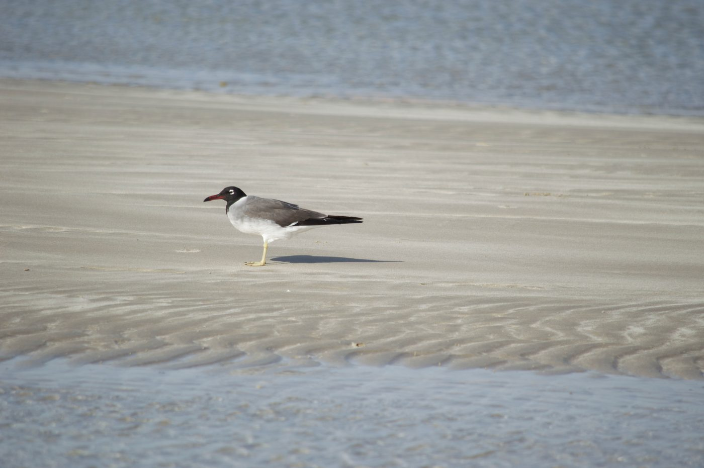
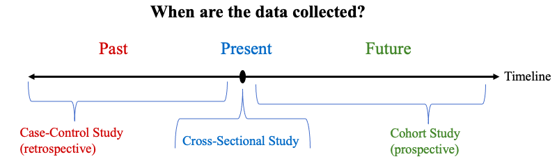
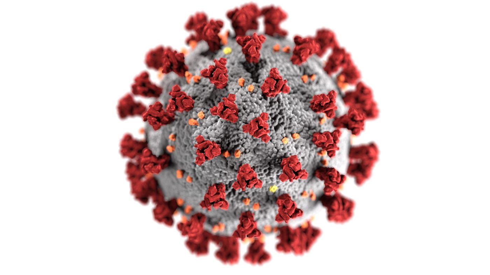

Section 1.3: Observational Studies and Designed Experiments
Learning Objectives
1.Identify and differentiate between observational studies and designed experiments.
2.Identify and differentiate between types of observational studies- case-control, cross-sectional, and cohort studies.
3.Identify randomized control trials in designed experiments.
4.Identify control and treatment groups.
5.Identify placebo, blinding, and double blinding in designed experiments.
6.Recognize the power of observational studies and of designed experiments to establish associations and cause and effect relationships.
In this section we continue the discussion of data collection. Here we will introduce data collection from observational studies and from designed experiments.

Figure 1.11: The process of statistics emphasizing step 2, data collection.
Definition 1: Observational Study
Observational Study – An observational study is one where individuals are observed, and characteristics are recorded. There is no attempt to influence or manipulate the variables or individuals.
Observational studies allow you to learn characteristics of a population or determine if there is a relationship between two variables. But they don’t allow you to determine cause and effect. All the survey techniques discussed in section 1.2 are observational studies. In general, any poll or survey is an observational study. Other observational studies use existing data. For example, using data from the Center for Disease Control to analyze COVID-19 would be an observational study.
Example 1: Is this an observational study?
An ecologist is studying the bird population on a particular beach during the spring and summer months. Each Saturday during those months she counts the number of nests she locates. Is this an observational study?

Photo by Faraaz Zuberi (opens in a new tab) on Unsplash (opens in a new tab)
Solution: Yes! Since the number of nests found on the beach is observed and recorded, this is an observational study.
Example 2: Is this an observational study?
A college administrator wants to study the transfer rate at her college for different degree programs. She uses college data that is made available to her from the Instructional Resources Department. Is this an observational study?
Solution: Yes! Since the administrator observes the passing rates and does not try to manipulate the individuals or other factors, this is an observational study.
What if the ecologist in example 1 wanted to increase the population of birds on the beach? She might try to plant more nesting materials, add food sources, or remove predators from the beach. After making these changes she would count the nests again to see if the number increased. This is not an observational study. In this case, she has tried to manipulate the variables to determine if she can increase the population. If she did this, and wanted to see if her intervention worked, she would use a designed experiment.
Definition 2: Designed Experiment
Designed Experiment – A designed experiment is a study conducted to determine how varying one or more factors (or variables) will affect another variable. The variables that are manipulated are called explanatory variables, and the variable that is measured for the result is called the response variable.
In common language, a designed experiment is one where we measure the result if some factors are changed. More specifically, we are trying to isolate the effect of what we call a treatment on the response variable. In the example preceding, the explanatory variables were the increased nesting materials, available food, and predator numbers. The response variable is the number of nests on the beach. It may be that making those changes to the explanatory variables (the treatment) will result in the number of nests and the bird population increasing. It may also turn out that those changes do not have the desired effect. The only way to know is to run the experiment!
Example 3: Create a designed experiment
A math professor decides to study the effect of using a free online textbook versus using a published textbook that students must purchase. How can they create a designed experiment to see if there is a difference in student success? What is the treatment? What is the response variable?
Solution: Here, the professor is attempting to isolate the effect of the free book on student success. The treatment is the free online book. The response variable is the student’s grade in the class. Does using the free online book (treatment) cause the average grade (response) to increase? To find out, the instructor could use the past average grade using the published book as a baseline. They could use the free online textbook for a semester, then compare the results. If the grades were higher using the free online book, they would have evidence suggesting that using the free book leads to higher grades.
There is more to designing a statistically sound experiment than is discussed in example 3. We will take a deeper look at observational studies and designed experiments after we emphasize their differences. For now, remember that observational studies do not interfere with or manipulate the variables, but designed experiments do.
Example 4: Observational Study or Designed Experiment?
Determine if the data will come from an observational study or a designed experiment.
a.Pew Research Center conducts a poll asking Asian Americans if they feel that violence against Asians is increasing due to COVID-19.
b.A professor assigns some students to group tutoring to measure if student grades improve.
Solution:
a.This is a poll, so it is an observational study. The people who take the poll will answer the questions without interference from the researchers.
b.This is a designed experiment. The treatment is the group tutoring. If the grades of individuals assigned to group tutoring are better, we could conclude that the tutoring was responsible.

Important Point!Cause and Effect
Observational Studies cannot determine cause and effect. You can describe populations and notice patterns among the variables, or associations, using observational studies. If you wish to establish cause and effect, you must use a designed experiment.
Types of Observational Studies
Observational studies can be broken into three types, based on when the observation is made. Using data from the past is called a case-control, or retrospective study. Using data collected in the present is called a cross-sectional study. Collecting data from some point and moving into the future is called a cohort, prospective, or longitudinal study. See figure 1.12.
Definition 3Types of Observational Studies
1.Case-control studies- These are also known as “Retrospective”. Here, we look back in time using records or memories of individuals.
2.Cross-sectional studies- In these studies, data is collected at one point in time or over a short time interval.
3.Cohort studies- These are also known as “Prospective” or “longitudinal”. Here, we identify a group and track it over time. This is the most powerful of the observational studies, but it takes more time to complete.

Figure 1.12: Data collection timeline.
Example 5: What type of observational study is this?
Pew Research Center conducted a poll between June 4 and June 11, 2020. They asked Asian Americans and African Americans about perceived increases in discrimination during the COVID-19 pandemic and the protests following George Floyd’s murder. What type of study is this?
Solution: This survey is cross-sectional because Pew is intentionally measuring attitude at one point in time. The results will only inform us about the feelings of those polled during that one week in June 2020. If Pew wanted to know the feelings at a later date, they would have to repeat the survey. Often polls like this are done at regular intervals and the changes in the results are tracked. A good example is the approval rating of the U. S. President. Approval ratings are collected by many sources and tabulated weekly.
Example 6: What type of observational study is this?
College administrators look at graduation rates from the last 5 years. They look at demographic data to evaluate how effectively they are serving BIPOC students. What type of study is this?
Photo by Vasily Koloda (opens in a new tab) on Unsplash (opens in a new tab)
Solution: This is case-control or retrospective because historical records are being used.
Example 7: What type of observational study is this?
College administrators wish to track students who enter college and enroll in Extended Opportunity Programs and Services (EOPS). They track each entering EOPS student for 6 years after they enroll. Do the students who enroll in EOPS graduate? Do they transfer? Do they get jobs? The data that is collected is used to evaluate the effectiveness of the program. What type of study is this?
Solution: This is a cohort study. It will take six years to collect the data to measure the effectiveness of the EOPS program.
Designed Experiments
Going back to example 3, the instructor was attempting to measure average grades in their class if they switched from a published (expensive!) textbook to a free online book. However, that example would not be considered statistically sound. There is the possibility that the students who used the published book in a prior semester were not like the students who used the online book. Perhaps one class was an evening class with older students while the other was a morning class with younger students. Or perhaps one section was a fall semester course over 16 weeks, while the other was a summer course over 8 weeks. There could be other factors influencing the resulting average class grade, such as fluctuations in the economy or (recently) a pandemic. For these reasons, designed experiments must be carefully thought out. Statisticians and scientists must carefully design methods to “control” for these factors, meaning they need to block or anticipate their influence. Designing experiments is very complicated, and there are entire courses that cover that topic. We will discuss only how to create the simplest designed experiments so that they will be statistically sound.
The simplest designed experiment is called a Randomized Control Trial (or RCT). In the RCT trial, a random sample is taken from the population, and each individual is randomly assigned to one of two groups. One group gets a treatment, while the other group does not. The group that receives the treatment is called the treatment group. The group that does not receive the treatment is called the control group and is there to provide a baseline for comparison. See figure 1.13 below.
Figure 1.13: Diagram of a designed experiment.
After the treatment is applied, the two groups are checked, and results are compared. If there is a difference between the groups, it is attributed to the treatment. If there is no measurable difference, the treatment had no effect.
Sometimes, the control group receives a placebo, or fake treatment. This is called a Blind study. In a blind study, the individual does not know if they are getting the treatment or a placebo. Doing this helps to account for the placebo effect, which is where a person’s mind makes their body respond to a treatment because they think they are being treated when in truth they are not. It is a “mind over matter” phenomenon. If you believe you are being treated, you might improve without the real treatment. For this reason, placebos and blinded trials are often used to test the efficacy of medical treatments. If the treatment group who gets the real “treatment” improves more noticeably than the control group with the placebo, we can conclude that the “treatment” was effective. (Note that not every experiment needs a placebo. If the response variable is a measurement, for example weight of an Alaskan Malamute, or growth rate of flowers on a plant when given a special fertilizer, there is no need to trick the dog or plant with a placebo. In other situations, there is no way to use a placebo. For example, if you are testing how exercise affects blood pressure, you can’t create a placebo for exercise. Individuals will know if they exercise or not, there is no way to hide it!)
A Double-blind study is where neither the individual nor the researcher knows who is getting the treatment or who is getting the placebo. In these types of studies, a high-level administrator will know which individual receives treatment, and which receives placebo, but the researchers working with the subjects don’t know. This is important so that the researchers working with the subjects treat them all the same. Since they don’t know which individuals received treatment, they can’t favor them in any way, influence their responses, or even falsify the data. That helps to keep their reporting of individuals fair and accurate, and the results reliable.
Definition 4Vocabulary for Designed Experiments
1.Blind Study- This is a study where the individuals do not know if they receive the treatment or not.
2.Placebo- Used in a blind study so that participants do not know if they receive treatment. Often a placebo is a sugar pill or saline solution.
3.Double-Blind Study- A study in which neither the individuals nor the researchers working with them know who receives treatment.
Example 8: Remdesivir for the Treatment of COVID-19
In May 2020, a study was published by the New England Journal of Medicine about using Remdesivir to treat COVID-19. The investigators used a double-blind, randomized, placebo-controlled trial of intravenous Remdesivir in adults hospitalized with Covid-19. How did they design the experiment, and what were the results?
Solution: Patients were randomly assigned to receive either Remdesivir (200 mg loading dose on day 1, followed by 100 mg daily for up to 9 additional days) or placebo for up to 10 days. The primary outcome was the time to recovery, defined by either discharge from the hospital or hospitalization for infection-control purposes only. The response variable was the time to recovery.

Photo by CDC (opens in a new tab) on Unsplash (opens in a new tab)
The control group had 521 patients, and the treatment group had 538 patients, randomly assigned. The result was that patients in the treatment group recovered more quickly and spent fewer days in the hospital (11-day median for treatment, 15-day median for control). This means that the patients receiving the treatment of Remdesivir were considered recovered approximately 4 days sooner than those receiving the placebo. The study did not conclude whether or not Remdesivir lowered mortality (death rate).
The other kind of designed experiment we will consider in this course is a Non-random Control Trial, or more specifically, a Matched Pairs Design. We would use a matched pairs design when we want to check the same or similar individuals under two different treatments. For example, we might have a random sample of people apply for the same car insurance coverage from two different companies. Then we could calculate if one company charges more for the same coverage. Each subject has two measurements, one from the first company and one from the second. The pairs are matched in this way.
Another example using matched pairs would be to use a pre-test and post-test on a sample of individuals taking a statistics test. The pre-test could be given before a review module. The post-test is then given after the review module. If the results of the post-test are better than the results on the pre-test, we have evidence that the review module was effective. We will look more at these types of experiments in chapter 10.
Figure 1.14 is a flowchart that shows the different kinds of studies we have discussed in this section.
Figure 1.14: Summary of types of studies we have discussed in section 1.3.